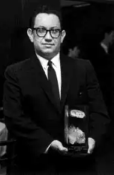

Деніел Кіз народився в Нью-Йорку 9 серпня 1927 року. У 17 років вступив до морської служби США та вийшов у море, як стюард корабля.
Повернувшись з плавання, Кіз відновив своє навчання в Бруклінському коледжі та закінчив його отримавши ступінь бакалавра в області психології.
Працював помічником редактора журналу "Наукова фантастика", займався фотографією та викладав англійську мову у школі. Захистив дисертацію з філології, після чого викладав англійську мову і літературу, вів курси письменницької майстерності в різних університетах. На даний час — професор літератури в Університеті штату Огайо. Одружений, має двох дочок. Популярність Деніелу Кізу принесло оповідання "Квіти для Елджернона" та однойменний роман на його основі. Роман перекладено багатьма мовами і вивчається в школах і коледжах по всьому світу. У 1968 році режисер Ральф Нельсон зняв за романом "Квіти для Елджернона" фільм "Чарлі". За роль Чарлі Гордона актор Кліфф Робертсон отримав премію "Оскар". Роман був також адаптований як спектакль та поставлений у Франції, Польщі та в Японії. У 1960 році оповідання "Квіти для Елджернона" отримує премію "Х'юго", а в 1966-му премію "Небюла" отримав вже роман, написаний на його основі. Романи Квіти для Елджернона (Flowers for Algernon, 1966) Дотик (The Touch, 1968)про трагедію людини, яка отримала велику дозу радіаційного опромінення П'ята Саллі (The Fifth Sally, 1980) Таємнича історія Біллі Міллігана (The Minds of Billy Milligan, 1981) Історія основана на реальних подіях, розкриває перед нами людину роздвоєнням особистості — Біллі Міллігана. 24 окремі особистості, різні по інтелекту,дорослі та діти, чоловіки та жінки, обличчя з кримінальними схильностями та художні натури — ведуть боротьбу за володінням його тіла, не дозволяючи йому контролювати свої дії. Війни Міллігана (The Milligan Wars, 1986) книга видана лише в Японії, її видання на інших мовах планується лише після виходу фільму про Біллі Міллигана До самої смерті (Until Death, 1998) Документальна проза Про Клавдію (Unveiling Claudia, 1986) Елджернон, Чарлі та я: подорож письменника (Algernon, Charlie and I: A Writer's Journey, 2000)